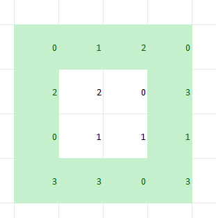
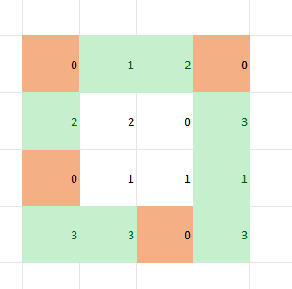
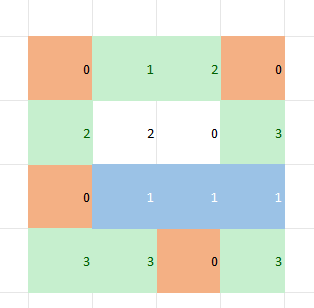
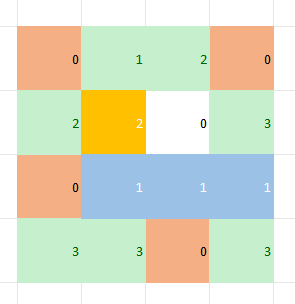
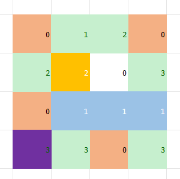

Первую координату места, где спрятан подарок тебе нужно отгадать, используя Библию
"Жизнь твоя будет висеть пред тобою, и будешь трепетать ночью и днём, и не будешь уверен в жизни твоей" Книга Второзакония 29:66 (глава 29, стих 66)
Твоя задача - прочитать атмосферные стихи из библии ниже и выписать себе номер главы и стиха, а потом сложить всё в координату X на карте. Для координаты Y будет другое задание))))
Книга Второзакония
Только берегись и тщательно храни душу твою, чтобы тебе не забыть тех дел, которые видели глаза твои, и чтобы они не выходили из сердца твоего во все дни жизни твоей; и поведай о них сынам твоим и сынам сынов твоих.
Книга Екклесиаста
На всё это я обратил сердце моё для исследования, что праведные и мудрые и деяния их — в руке Божией, и что человек ни любви, ни ненависти не знает во всём том, что перед ним
Третья Книга Моисея Левит
И возьмёт священник из сей жертвы часть в память и сожжёт на жертвеннике: это жертва, благоухание, приятное Господу
Послание к римлянам Святого Апостола Павла
И не делать ли нам зло, чтобы вышло добро, как некоторые злословят нас и говорят, будто мы так учим? Праведен суд на таковых
,
Условие написано в файле, но продублирую немного здесь и приведу пример
Задача про овощи, на грядке, и эти овощи нарисованы в таблице на грядке и обозначены цифрами от 0 до 3
Овощи прорастут при определённых условиях, которые написаны в файле, задача - посчитать, сколько овощей прорастут в нужных условиях
Морковь обозначена цифрой 0
Капуста обозначена цифрой 1
Редис обозначен цифрой 2
Свёкла обозначена цифрой 3
Вот пример:
Допустим, у нас есть такая грядка размером 4 на 4
Здесь прорастут 4 морковки, выделенные оранжевым цветом, потому что они растут во внешнем ряду:
Прорастут 3 капусты, выделенные голубым цветом, потому что горизонтально рядом их посажено 3 штуки и рядом с двумя из этих трёх капуст есть проросшая морковь ("рядом", значит на клетку левее/правее/выше/ниже, клетки, расположенные по дигонали не считаются как стоящие рядом):
Прорастёт один редис, выделенный жёлтым цветом, потому что он растёт не во внешнем ряду:
И прорастёт одна свекла из четырёх, выделенная фиолетовым, потому что на клетку выше/ниже/правее/левее рядом не растёт капуста:
Если вторая задача сложная, то так мне и напиши, потому что наверно я немного замудрила, но вроде прикольно
,